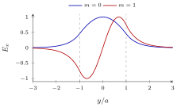

is guided only at angles satisfying ; the number of modes is set by
is guided only at angles satisfying ; the number of modes is set by  (single mode for ), and each mode has an effective index
(single mode for ), and each mode has an effective index  .
.Waveguide condition (derivation)
A guided ray must interfere constructively with itself after two reflections: the transverse phase accumulated, , minus the two TIR phase shifts (Fresnel), equals (Hondros and Debye 1910). With , . Guidance needs , i.e. .
Wave-equation form (TE, symmetric slab)
in the core, outside, . Continuity of and : even modes , odd — exactly the finite quantum well with radius of the circle. Number of modes ; the fundamental mode has no cutoff.
Worked example
Planar guide, , , µm, µm: ; : modes. Single-mode operation needs : either µm, or, at 1.3 µm, a core µm.
Intermodal dispersion
Different modes travel at different group velocities: the ray picture gives for many modes (steepest vs axial ray), ps/m for the example above.
Picture: TE mode profiles ( , )
, )

and of a symmetric slab: oscillatory in the core, evanescent in the cladding.Inside the core () the field is a standing wave, or ; in the cladding it is evanescent, , and the slope matches at the boundary (evanescent waves).
Engineering applications
Laser-diode active layers (the double heterostructure is a slab: confinement factor  ), planar lightwave circuits, silicon photonic waveguides (high contrast, sub-µm), the effective index method for 2D guides.
), planar lightwave circuits, silicon photonic waveguides (high contrast, sub-µm), the effective index method for 2D guides.
Exam-style exercise
A symmetric slab guide has , , thickness µm, µm. (a) V-number and number of modes. (b) Largest thickness for single-mode operation. (c) Intermodal spread per km.
Solution
(a) , ; (TE, TE, and the same number of TM modes). (b) → µm. (c) ns/km (upper bound; with two modes the real spread is smaller).
Pitfall
"Single-mode" refers to one mode per polarisation: a symmetric slab with still carries a TE and a TM mode.